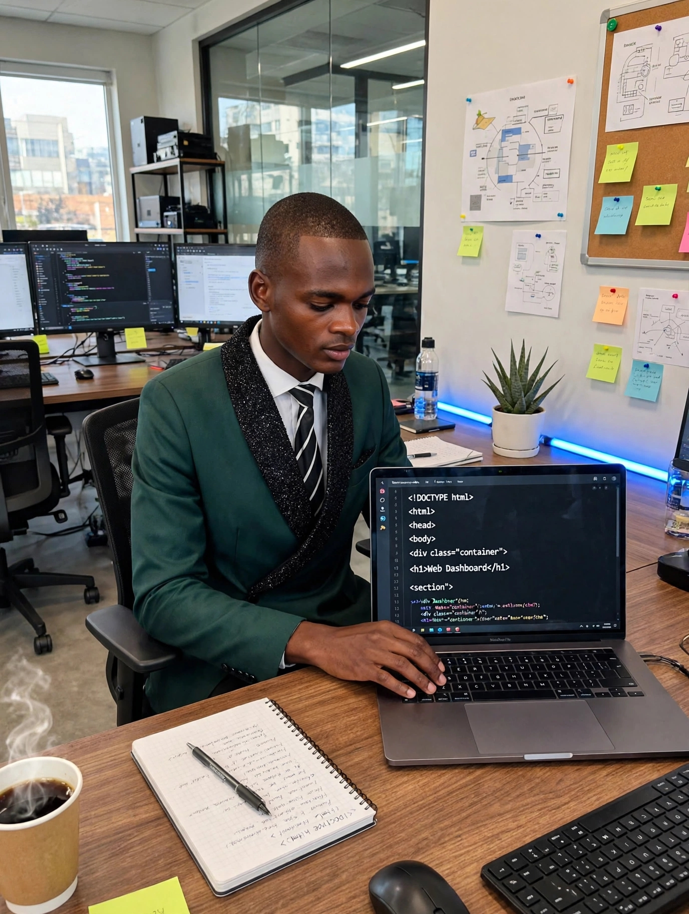
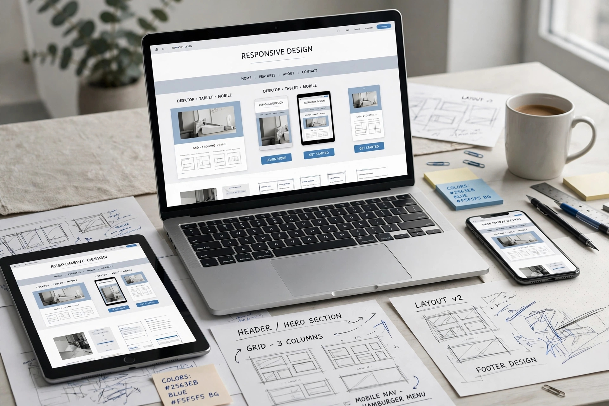
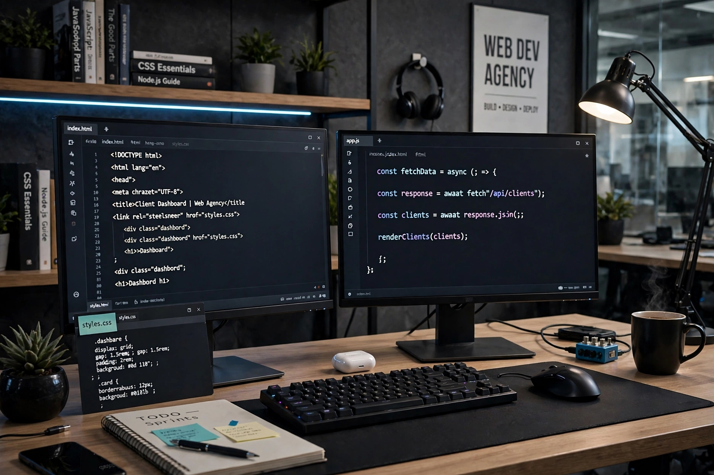

HR Intern @ Chris Hani District | Web Developer & Designer
View My 11 Pages ↓Molo! I reside in Mlungisi Location, Queenstown, Eastern Cape. I am currently doing my Inservice Training in Human Resource Department in Chris Hani District Municipality here in Queenstown.
But I am also a passionate Web Developer and Web Designer. I love blending HR discipline with tech creativity. Professional but fun, serious about work, and I love making things that make people say "WOW!".
Current Role: Inservice Trainee - Human Resources
🎓 Human Resource Management - Currently Inservice Training
💻 Web Development & Design - Self-taught & Certified Courses
📚 IT Support & Data Capturing - Practical Experience
I believe in lifelong learning. From HR theories to HTML, CSS, JavaScript - I learn every day to stay relevant.
2026 - Present: HR Intern - Chris Hani District Municipality
- Assisting HR department in Queenstown
- Managing employee files and data
2026 - Present: Freelance Web Developer
- Building websites for local businesses in Eastern Cape
- IT Support, laptop setup, data capturing
- Helping SMMEs go online affordably
Business, CV, Portfolio - mobile ready
Setup & data capturing
CVs, filing, documents
Posters, logos, branding
All your photos brightened - computers as background everywhere



- Local Business Owner, Queenstown